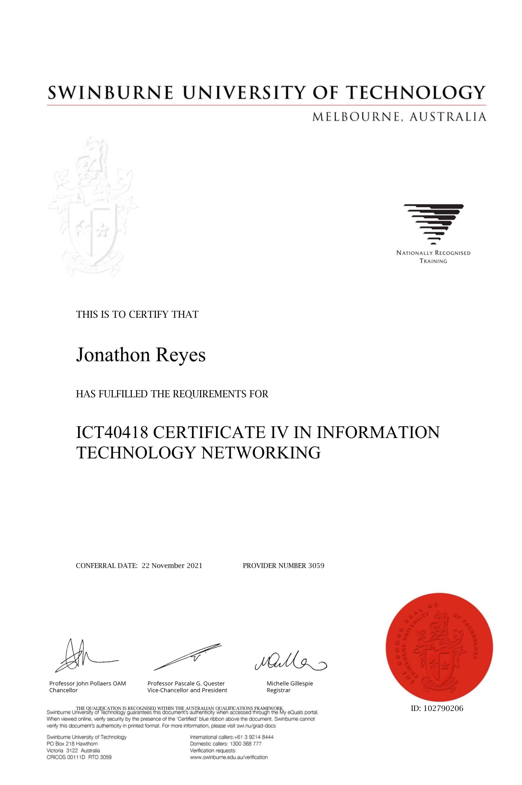
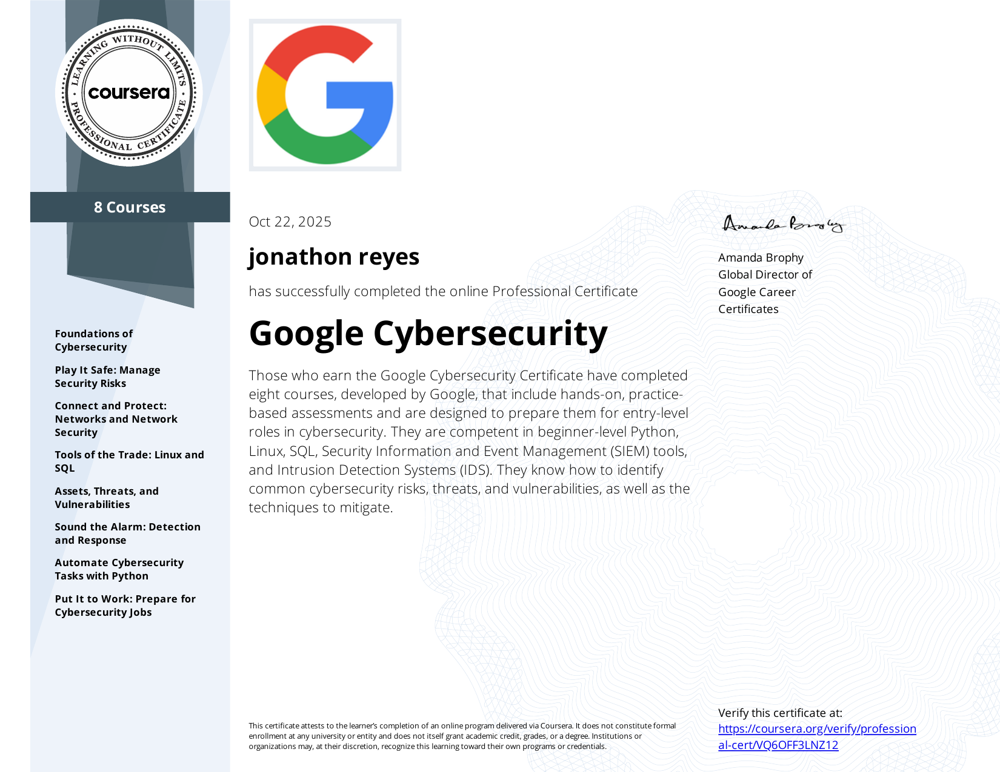

About
About Me
Mind and body technical expression — blending hands-on infrastructure, security learning, and a background shaped by movement, discipline, and curiosity.
Intro video
Old days dancing and teaching
SOC Level 1
Hands-on SOC training focused on blue team analysis and practical investigation workflows.
CCNA
Networking foundations across routing, switching, troubleshooting, and infrastructure logic.

CertificationCertificate IV in Networking
Formal networking studies covering core infrastructure, troubleshooting, and foundational networking concepts.

CertificationGoogle Cybersecurity Professional Certificate
Completed Google's cybersecurity program covering SIEM investigation, incident response, Linux fundamentals, network security, and Python automation concepts.